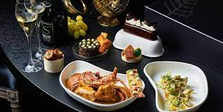
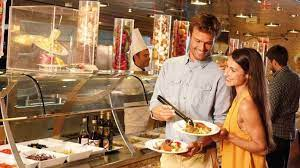
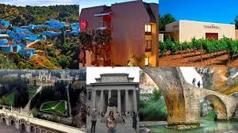

| Gastronomia | Restaurantes |  |
| Siderias y asadores | ||
| Bodegas de vino y txalcoli | ||
| Productos tipicos |  | |
| Escuelas de hosteria | ||
| Cultura | Archivos y bibliotecas |  |
| Museos | ||
| Palacios de congresos | ||
| Ferias de muestras | Ocio | Entretenimiento y diversion |
| Ocio cultural | ||
| Excursiones y deporte |